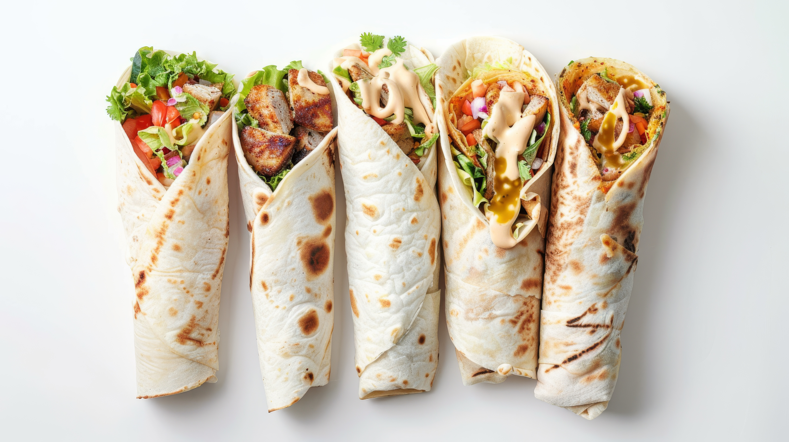

🥙 Shawarma
Description:
Shawarma is a popular Middle Eastern street food made by
stacking marinated meat—usually chicken, beef, or lamb—on a vertical
rotisserie and slowly roasting it to juicy perfection. The meat is shaved
off and typically wrapped in warm flatbread with tangy sauces, fresh
vegetables, and pickles. It’s flavorful, aromatic, and easy to customize,
making it a crowd favorite for quick meals or parties.
Ingredients:
- 500g chicken thighs or beef strips
- 3 tbsp plain yogurt
- 2 tbsp olive oil
- 2 cloves garlic, minced
- 1 tsp cumin
- 1 tsp paprika
- ½ tsp turmeric
- ½ tsp cinnamon
- Salt and pepper to taste
- Pita bread or flatbread
- Pickles, lettuce, and tomatoes
- Garlic sauce or tahini sauce
Instructions:
- In a bowl, mix yogurt, olive oil, garlic, and all the spices.
-
Add the meat and marinate for at least 2 hours (overnight for best
flavor).
-
Grill or pan-fry the meat until fully cooked and slightly charred.
-
Warm the flatbread, then fill it with meat, vegetables, and sauce.
- Roll up the shawarma and serve hot.